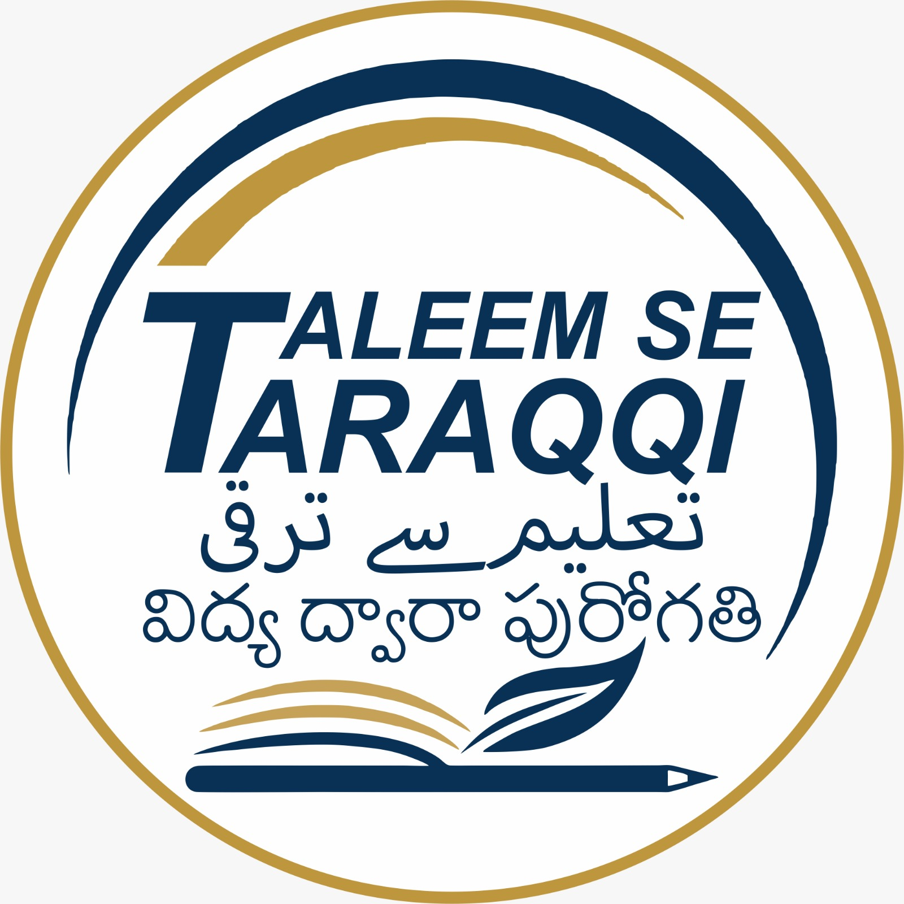

Every service is completely free for eligible minority community students of Telangana, delivered by experienced faculty and career professionals.
A holistic spectrum of services designed to support youth from schooling through competitive selection.
Structured, syllabus-aligned classroom and digital coaching for UPSC Civil Services, TSPSC Groups I, II, III & IV, SSC (CGL, CHSL), Banking (IBPS, SBI), Railways (RRB), and Police/SI recruitments with weekly tests and test analytics.
Scientific aptitude assessment, psychometric profiling, course selection advice, and career path planning for Class X, XII, and undergraduate students deciding between academic, technical, or competitive examinations.
Air-conditioned reading rooms and e-learning laboratories equipped with high-speed internet, e-books, online test simulators, previous 20 years' question banks, and daily national and regional newspapers in multiple languages.
Dedicated helpdesk providing guidance on Central & State Government minority scholarships, Post-Matric schemes, Chief Minister's Overseas Scholarship, fee reimbursements, and document verification assistance.
Industry-aligned short-term certified courses in IT skills, programming fundamentals, data entry, communication, and technical trades in partnership with ITIs, Telangana Academy for Skill and Knowledge (TASK), and NSDC.
Rigorous personality development bootcamps, mock interview boards featuring retired IAS/IPS officers, video feedback sessions, body language coaching, group discussions, and public speaking workshops.
All services are free for notified minority communities (Muslim, Christian, Sikh, Buddhist, Parsi, Jain) residing in Telangana.